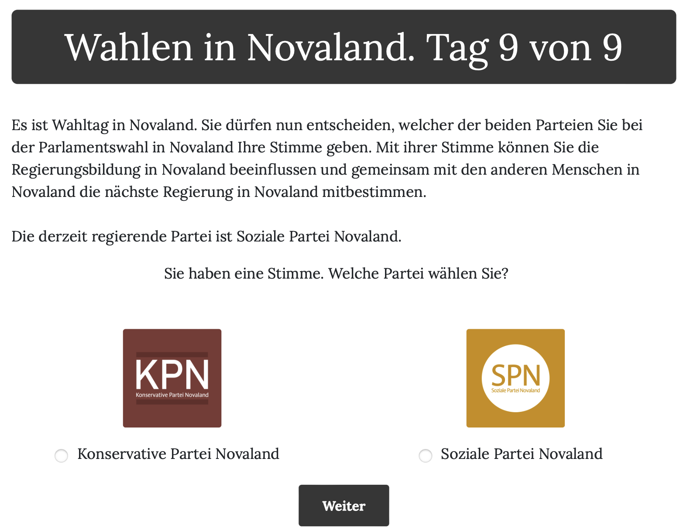

Part 3: The Election in Novaland
After participants completed the fourth vignette, the part of the Novaland stay that revolves around the national election started. The respective pages are part of the election app in the oTree project. In this election, participants could vote for onw of two parties, the Soziale Partei Novaland or the Konservative Partei Novaland. The election was designed to test the effects of public service quality and corruption on electoral behavior and incumbent punishment.
- The election app is structured as follows:
The first page introduces the election and the political system of Novaland.
The second pages presents one of the two parties.
The third page presents the other party.
The fourth page is the ballot page, where participants can cast their vote.
The fifth page contains a referendum, where participants can vote to change the income tax in Novaland.
On the sixth page, participants were informed that their stay in Novaland ends and were debriefed.
Randomization of the election app
The information that was provided to participants in the context of the election was randomized in two instances. The first randomization was the order of the party pages. Participants were randomly assigned to one of two groups: one group saw the Soziale Partei Novaland page first, while the other group saw the Konservative Partei Novaland page first. This was done by using the random.choice() function in the creating_session function to randomly assign participants to one of the two groups and then storing the information of which party page they saw first in the Player object as first_party.
The second randomization was the incumbency of the parties. Participants were randomly assigned to one of two groups: one group saw the Soziale Partei Novaland as the incumbent party, while the other group saw the Konservative Partei Novaland as the incumbent party. This was also done by using the random.choice() function in the creating_session function to randomly assign participants to one of the two groups and then storing the information of which party was the incumbent in the Player object as incumbent_party.
The pages of the election app
1. The introduction of the election
The first page of the election app is the election_intro page. Here, participants were told that they will now take part in the national election of Novaland. They were informed that the head of government will be elected from the parliament and needs the majority of the votes in the parliament to be elected. The page also mentions which of the two parties is the incumbent party, depending on the randomization of the incumbency by calling the incumbent_party variable on the HTML page using {{ incumbent_party }}.
2. & 3. The introduction of the parties
The second and third pages are the party_1 and party_2 pages, respectively. On these pages, participants were presented with the information about the two parties. The order of the pages was randomized, so that participants either saw the Soziale Partei Novaland first or the Konservative Partei Novaland. This is done by setting conditional statements in the HTML templates which call the values of the first_party variable.
The second and third pages are the party_1 and party_2 pages, respectively. On these pages, participants were presented with the information about the two parties. The order of the pages was randomized, so that participants either saw the Soziale Partei Novaland first or the Konservative Partei Novaland. This is done by setting conditional statements in the HTML templates which call the values of the first_party variable. This is how the party_1 page is created:
1 <!-- Builds on the global Page.html template -->
2 {{ extends 'global/Page.html' }}
3
4 <!-- Style settings for embedding the parties' images -->
5 {% block style %}
6 <style>
7 .text-image-container {
8 display: flex;
9 flex-direction: column;
10 }
11 </style>
12 {% endblock %}
13
14 <!-- Title of the page (not defined here)-->
15 {% block title %}
16
17 {% endblock %}
18
19 <!-- Content of the page, depending on "first_party" -->
20 {% block content %}
21
22 <! Checks if the first party is the "Soziale Partei Novaland" -->
23 {% if first_party == "Soziale Partei Novaland" %}
24 <div class="content-box">
25 <!-- Title of the page, adjusted to the Soziale Partei Novaland -->
26 <h1 class="h1">Soziale Partei Novaland. Tag 9 von 9</h1>
27 <!-- Define area for the text and images -->
28 <div class="text-image-container">
29 <div class="text-content">
30 <!-- Create table for containing the text and the image in one row -->
31 <div class="row">
32 <! Column for the text -->
33 <div class="col col-sm-9 col-12">
34 <!-- Text about the Soziale Partei Novaland -->
35 Die SPN (Soziale Partei Novaland) will mehr sozialstaatliche Leistungen, auch wenn das mehr
36 Steuern und Abgaben bedeutet. Sie will mehr staatliche Lösungen für die Probleme der Menschen
37 organisieren und finanzieren. <br><br>
38
39 Für Menschen in Novaland mit Ihrer Einkommenshöhe würde das verfügbare Einkommen sinken,
40 allerdings hätten Sie möglicherweise Zugang zu mehr Dienstleistungen oder Sozialleistungen
41 des Staates.
42 </div>
43 <! Column for the image -->
44 <div class="col col-sm-3 col-12">
45 <!-- Image of the Soziale Partei Novaland -->
46 <img src="{% static 'SPN.png' %}" width="80%">
47 </div>
48 </div>
49 </div>
50 <!-- Button to continue to the next page -->
51 </div>
52
53 <button>Weiter</button>
54
55 </div>
56 <!-- End of the if statement for the first party being Soziale Partei Novaland -->
57 {% endif %}
58
59 <! Checks if the first party is the "Konservative Partei Novaland" -->
60 {% if first_party == "Konservative Partei Novaland" %}
61
62 <!-- Content for the Konservative Partei Novaland (same logic as above with some replacements -->
63 <div class="content-box">
64 <!-- Title of the page, adjusted to the Konservative Partei Novaland -->
65 <h1 class="h1"> Konservative Partei Novaland.<br>Tag 9 von 9</h1>
66 <div class="text-image-container">
67 <div class="text-content">
68
69
70 <div class="row">
71 <div class="col col-sm-9 col-12">
72 <!-- Text about the Konservative Partei Novaland -->
73 <p class="p">Die KPN (Konservative Partei Novaland) will Steuern und Abgaben senken, auch wenn das
74 weniger
75 sozialstaatliche Leistungen bedeutet. Sie will Menschen in die Lage versetzen,
76 eigenverantwortlich Lösungen für ihre Probleme zu suchen. <br><br>
77
78 Für Menschen in Novaland mit Ihrer Einkommenshöhe würde das verfügbare Einkommen steigen,
79 allerdings hätten Sie möglicherweise Zugang zu weniger Dienstleistungen oder Sozialleistungen
80 des Staates.
81
82 </p>
83 </div>
84 <div class="col col-sm-3 col-12">
85 <!-- Image of the Konservative Partei Novaland -->
86 <img src="{% static 'CPN.png' %}" width="80%">
87 </div>
88 </div>
89 </div>
90 <div class="row">
91 <div class="col">
92 <button>Weiter</button>
93 </div>
94 </div>
95 </div>
96
97 </div>
98
99 {% endif %}
100
101 {% endblock %}
The same code is repeated for the party_2 page, with the only difference being that the text and image of the parties are swapped, depending on which party was presented first. This means that if the value of the first_party variable is Soziale Partei Novaland, the text and image of the Konservative Partei Novaland are displayed on the party_2 page, and vice versa.
The images of the parties are stored in the static folder of the oTree project, so that they can be accessed by the HTML template using the {% static %} tag. The name of the image files are SPN.png for the Soziale Partei Novaland and CPN.png for the Konservative Partei Novaland.
4. The election ballot
After participants were introduced to the two parties, they were directed to the voting_page page. On this page, they could cast their vote for one of the two parties. This page follows a similar logic as the party pages, also embedding randomized orders and conditional statements to display the correct party name and image. It is more complex, however, including clickable images and buttons that participants could use to cast their vote. And a table-like layout to display the ballot.
The layout of the page is structured like so: As always, the header of the page is defined in the h1 element, which contains the current day and the day count in Novaland. The main text below explains that participants can now vote for one of the two parties. The information about which of the two parties is the incumbent party is also displayed here, using {{ incumbent_party }} again.
Below this explanatory text, a column is created that contains the party image and the party name. Participants could click on either parties’ image or name below the image to vote for that party. On the bottom of the page there is a button that participants can click to continue to the next page.
This is what the ballot page looks like:
{kind=link}
This is how the party_1 page is created: At the top of the HTML template, some styling is applied to the buttons. Also, the style settings of the table formatting of the page are defined.
At the bottom of the HTML page, the following functions are defined. They are called when the participants click on the buttons or on the images of the parties:
1{% block script %}
2<script>
3 function SHOWCPN() {
4 document.getElementById("wahlen1").checked = true
5 document.getElementById("weiter-btn").style.display = "inline-block";
6 document.getElementById("weiter-btn").value = "Konservative Partei Novaland";
7 }
8
9 function SHOWSPN() {
10 document.getElementById("wahlen3").checked = true
11 document.getElementById("weiter-btn").style.display = "inline-block";
12 document.getElementById("weiter-btn").value = "Soziale Partei Novaland";
13 }
14</script>
15{% endblock %}
These functions are used to display the buttons for the respective parties when participants click on the party images. The SHOWCPN() function is called when participants click on the image of the Konservative Partei Novaland, while the SHOWSPN() function is called when they click on the image of the Soziale Partei Novaland. The functions set the value of the weiter-btn button to the name of the respective party and make it visible.